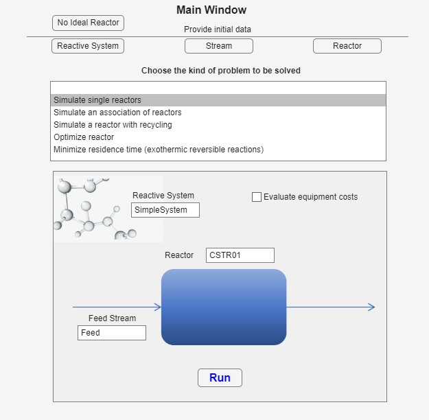

Main window and problem choices
The ideal-reactor application combines guided data-entry windows with a main problem selector. It can simulate one reactor, an association of reactors, or a reactor with recycling. It can also size a reactor by minimizing residence time or cost, and find a minimum-residence-time path for a reversible exothermic reaction.
Before You Start
Prepare components, reaction stoichiometry and kinetics, feed conditions, and the reactor configuration. Give each created item a short unique name; the main window uses those names to assemble a problem.
Open the Ideal Reactor App
From the main launcher, press Ideal Reactor App. Keep the app open while its data-entry windows create the named inputs for the current session.
Provide Initial Data
The three buttons under Provide initial data open the data-entry windows. The list below them determines which problem panel appears.

- Reactive System defines components, stoichiometry, kinetics, and thermal properties.
- Stream defines the feed composition and operating state.
- Reactor defines reactor type, size, thermal mode, and pressure behavior.
Choose the Problem
| Choice | What it asks for |
|---|---|
| Simulate single reactors | One reactive system, feed stream, and reactor. |
| Simulate an association of reactors | A reactor sequence, series or parallel arrangement, and an optional split. |
| Simulate a reactor with recycling | A reactor and feed together with the recycle ratio. |
| Optimize reactor | Feed and target product data, then either minimum residence time or minimum cost. |
| Minimize residence time for an exothermic reversible reaction | Feed and product data, a key-component index, and the confirmation checks shown in the panel. |

Run a Problem
- Create and name every required input.
- Select the problem type.
- Type the saved names exactly in the fields shown.
- Complete options such as Series, Parallel, split, recycle ratio, objective, or key component.
- Press Run and inspect the result window.
Next Steps
Begin with the Reactive System so the Stream and reactor share a consistent chemical basis.